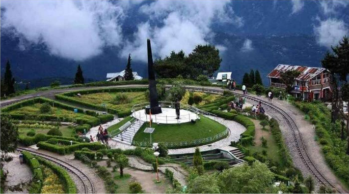

Darjeeling: Tea Garden Paradise
“A great journey start with the great cup of tea”
· ABOUT DARJEELING:
Darjeeling is famous throughout the world for the tea it grows and the great view of the Kanchenjunga range of mountains that it offers. It is also known for its richness in cultural & natural heritage and the famous toy train that has been declared a UN heritage.
· HOW TO REACH:
i. Bagdogra is the nearest airport from Darjeeling, located at a distance of 65 km.
ii. Darjeeling has its own railway station, named Darjeeling Railway Station.
iii. Road trip: Nearest major city from Darjeeling is Kolkata, 165 km away.
· WHAT INTRESTING TO DO IN DARJEELING:
i. Visit the famous monasteries like Ghoom Monastery.
ii. Witness wildlife at the largest high altitude zoo in India, Padmaja Naidu Himalayan Zoological Park.
iii. Spend an evening in the bustling Batasia Loop, one of major tourist attractions of Darjeeling.
· Places To Stay:
MAYFAIR Darjeeling, Sterling Darjeeling, Summit Hermon Hotel & Spa
· Average Budget:
₹8,500-13,500 per person
· Places to eat:
Kunga Restaurant, Sunset Lounge, and Gatty’s Cafe
Uttarakhand (Valley of flowers)
“Life is the flower for which love is the honey”
· ABOUT Valley of flowers:
The name suggests, Valley of Flowers is a destination where nature blooms in full glory offering a breathtaking experience. Exotic flowers (over 600 species) like orchids, poppies, primulas, marigold, daisies and anemones are an eye-catching spectacle.
· HOW TO REACH:
The fastest way to reach from Agra to Mathura is bus to Mathura and takes 1h 0m. The recommended way to reach from Agra to Mathura is bus to Mathura and takes 1h 0m. Buses from Uttar Pradesh State Road Transport Corporation(UPSRTC), Raj Kalpana Travels, Panwar Travels etc.
Tourist attraction:
i. Visit the famous monasteries like Ghoom Monastery.
ii. Witness wildlife at the largest high altitude zoo in India, Padmaja Naidu Himalayan Zoological Park.
iii. Spend an evening in the bustling Batasia Loop, one of major tourist attractions of Darjeeling.
· Places To Stay:
· Nidhivan Sarovar Portico.
· Best Western Vrindavan.
· Best Western Vrindavan.
· MVT Guesthouse & Restaurant.
· Hotel Idhayan Palace.
· Kridha Residency - A Boutique Hotel.
· Hotel Santosh Dham.
· Hotel Hare Krishna Orchid
· Average Budget:
₹8,500-13,500 per person
· Places to eat:
Kunga Restaurant, Sunset Lounge, and Gatty’s Cafe
Arunachal Pradesh (Ziro valley)

"Numerous cultural landscape"
· ABOUT Ziro valley:
It is famous for paddy-cum-pisciculture cultivation. The area is renowned for the terrace paddy fields where the unique system of poly-culture and water management is practiced by the local people. Mainly inhabited by the Apatani tribe, the town wears a festive look during festivals celebrated by the Apatani people.
· HOW TO REACH:
• Reaching Guwahati
• Train from Guwahati to Naharlagun
• Get Your Permit Stamped
• Get Your Permit Stamped
• Sumo to Ziro.
Tourist attraction:
• It is rich in flora and fauna. Pleioblastus is a bamboo variety found only in this region. It houses many endangered animals like leopards, clouded leopards etc. It is also home to many varieties of flora like ferns, orchids, silver fir trees, bamboo and rhododendron.
• Talley Valley Wildlife Sanctuary.
• Meghna Cave Temple.
• Kile Pakho.
• Midey.
• Ziro Puto.
• Dolo Mando.
• Hapoli.
• Dilopolyang Maniipolyang..
· Places To Stay:
1. Siiro Resort. Show Prices. Small Hotel ·
2. Hotel Blue Pine. Show Prices. Small Hotel ·
3. Abasa Homestay. Show Prices. Guesthouse ·
4. Ziro Valley Resort·
· Average Budget:
₹4,500-6,500 per person.
Mathura
"The birth place of mathura"
· ABOUT MATHURA:
It is the place where Lord Krishna was born and spent his early days. A famous centre of Buddhism in ancient India, the place was known for a great school of sculpture known as Mathura School of Art which flourished under the Kushana dynasty in the 1st century AD.
· HOW TO REACH:
The fastest way to reach from Agra to Mathura is bus to Mathura and takes 1h 0m. The recommended way to reach from Agra to Mathura is bus to Mathura and takes 1h 0m. Buses from Uttar Pradesh State Road Transport Corporation(UPSRTC), Raj Kalpana Travels, Panwar Travels etc.
Tourist attraction:
Trail the seven Goswami temples, Vrindavan Visit the thus- named Radha Damodar Temple, Radha Gokulananda Temple, Radha Gopinath Temple, Radha Shyamsundar Temple, Radha Raman Temple, Radha Govindadeva Temple and Radha Madanmohan Temple for rich oral narratives and Vrindavan's earliest temple architecture.
· Places To Stay:
· Nidhivan Sarovar Portico.
· Best Western Vrindavan.
· Best Western Vrindavan.
· MVT Guesthouse & Restaurant.
· Hotel Idhayan Palace.
· Kridha Residency - A Boutique Hotel.
· Hotel Santosh Dham.
· Hotel Hare Krishna Orchid.
· Average Budget:
₹4,500-6,500 per person